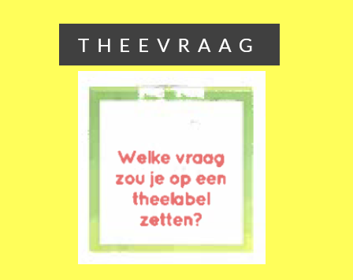

THEEVRAAG VAN VANDAAG
Date: May 2023
Medium: Website
I love the tealabels that come with Pickwick's teabags. They are invites to small moments of introspection. I apreciate these invites greatly, and have found them to be exceptional conversation starters. This website presents one such question each day, the same for everyone. This way, the invite is extended into an on-demand moment of reflection (together).
Link nyxaeroz.github.io/theevragen/
